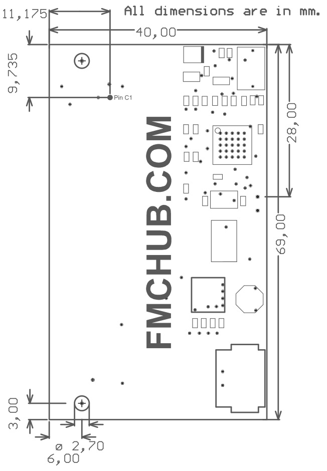

- Easy FMC FRU EEPROM programming and readout
- In-circuit configuration of FRU records
- Supports I2C EEPROMs with 1 byte and 2 byte addressing
- Fully open-source product
- USB serial port device
- USB powered 3P3VAUX voltage rail
- External power supply for 12 V and 3.3 V voltage rails
- Write enable/protection output
- Selectable GA[1:0] addressing pins
- Selectable PG_C2M flag
- AVR ISP programming header
The photo below shows the top side of the FMC FRU EEPROM Programmer.
- Small batch FMC module programming
- Compliance and production tests
- Professional production of FMC boards
- Prototyping of FMC modules
The FMC FRU EEPROM Programmer and the related toolchain is a powerful programming tool for FMC FRU (Field Replacable Unit) records. The programming adapter is designed for in-circuit configuration of ANSI/VITA 57.1 FPGA Mezzanine Cards (FMC) according to the IPMI Platform Management FRU Information Storage Definition. The board runs with open-source firmware and software for user-friendly configuration of I2C-compatible serial EEPROMs. Its microcontroller (Microchip ATmega32U4) translates a user command protocol from the serial interface into corresponding I2C read/write accesses to any compatible EEPROM devices. A user application on the PC host simplifies file transfers to the EEPROM via a USB cable. By eliminating the need for customer-specific FPGA firmware to program an FMC module, the standalone programming adapter is suitable for reliable small-batch production and prototyping.
For easy programming of an FMC EEPROM, we recommend the use of our complete open-source toolchain consisting of FMC EEPROM programming hardware, User command protocol implemented in ATmega32U firmware, and command line tool for the PC. All parts of the FMC FRU programmer toolchain are freely available on GitHub. By default, the microcontroller is programmed with the latest firmware revision on delivery!
2.1 FMC EEPROM Programming Hardware Putting the hardware into operation is quite simple. Just plug a USB cable into the Micro-USB socket. The red LED lights up as soon as the USB power supply is present. The green and orange LEDs should also (briefly) show some activity (fig. 1). Fig. 1: Putting the FMC FRU EEPROM Programmer into operation. The red LED (D3) indicates the power-on state. The orange LED (D1) and green LED (D2) also show some activity. An FMC module can be plugged into the programming adapter at any time. As long as a compatible module is plugged in (PRSNT_M2C_L is low), the green LED lights up permanently (fig. 2). Fig. 2: The green LED (D2) lights up continuously when an ANSI/VITA 57.1 compliant FMC module is plugged in. If there is the need to overwrite the firmware of the ATmega32U microcontroller, any AVR programmer with AVR ISP connector can be used. The connector must simply be plugged onto the 6-pin header (fig. 3). The signals are also marked on the carrier board. Fig. 3: The FMC programmer board is compatible with the AVR ISP header.
2.2 Microchip ATmega32U4 microcontroller firmware The microcontroller will be identified via the USB interface as serial port / terminal. The following parameters must be set for communication with a host PC.
| Baudrate: | 115200 |
| Data: | 8 data bits |
| Start/Stop: | 1 start bit, 1 stop bit |
| Parity bit: | none |
| Flow control: | none |
| Command | Description | Example (hex) | Response (hex) |
| 'b' (0x62) | set number of bytes to read in a burstArgument 1: n bytes to read (1 byte)Response 1: ACK (0x06)Response 2: Argument 1 value | 0x62 0x08 | 0x06 0x08 |
| 'f' (0x66) | returns always 0xFFArgument 1: -Response 1: 0xFF | 0x66 | 0xFF |
| 'g' (0x67) | get global address (GA) pinsof dip switch SW1Argument 1: -Response 1: GA[1:0] in hex (0x00 .. 0x03) | 0x67 | 0x03 |
| 'p' (0x70) | get plugged-in state(inverted PRSNT_M2C_L pin)Argument 1: -Response 1: 0x00=not plugged, 0x01=plugged | 0x70 | 0x01 |
| 'P' (0x50) | get protection polarityArgument 1: -Response 1: 0x00 or 0x01 | 0x50 | 0x01 |
| 'r' (0x72) | read with 1 byte addressingArgument 1: I2C Addr (1 byte)Argument 2: Mem Addr (1 byte)Response 1: ACK (0x06)Response 2: Mem data (up to n byte) | 0x72 0x50 0x01 | 0x06 0xFF |
| 'R' (0x52) | Read with 2 byte addressingArgument 1: I2C Addr (1 byte)Argument 2: Mem Addr MSB (1 byte)Argument 3: Mem Addr LSB (1 byte)Response 1: ACK (0x06) or NACK (0x3F)Response 2: Mem data (up to n byted) | 0x72 0x50 0x00 0x01 | 0x06 0xFF |
| 's' (0x73) | scan for EEPROM addressesArgument 1: -Response 1: I2C Addr (7 bit format)Response n: 0xFF (end of list) | 0x73 | 0x50 0xFF |
| 'v' (0x76) | version of firmwareArgument 1: -Response 1: Major versionResponse 2: Minor versionResponse 3: Build no.Response 4: 0xFF | 0x73 | 0x01 0x01 0x01 0xFF |
| 'w' (0x77) | write with 1 byte addressingArgument 1: I2C Addr (1 byte)Argument 2: Mem Addr (1 byte)Argument 3: Mem Data 1 (1 byte)Argument n: Mem Data n-2 (1 byte)Response 1: ACK (0x06) or NACK (0x3F) | 0x77 0x50 0x00 0xFF | 0x06 |
| 'W' (0x57) | Write with 2 byte addressingArgument 1: I2C Addr (1 byte)Argument 2: Mem Addr MSB (1 byte)Argument 3: Mem Addr LSB (1 byte)Argument 4: Mem Data 1 (1 byte)Argument n: Mem Data n-3 (1 byte)Response 1: ACK (0x06) or NACK (0x3F) | 0x77 0x50 0x00 0x01 0xFF | 0x06 |
2.3 Command line tool For easy use and out-of-the-box functionality, there is a simple console application for Microsoft Windows. The executable binaries and the source code are available on FMC FRU EEPROM Programmer GitHub repository. Fig. 4: Example usage of the command line tool with parameters -p -s -i and -m. The application reports all necessary status information of the FMC module's EEPROM. The most important calls for uploading and downloading files are shown in the examples below: 2.3.1 File download Fig. 5: Example usage of the command line tool with parameters -m and -d. Firstly, the application sets the EEPROM parameters by memory autodetect function. Secondly, the application transfers the content from the FMC EEPROM to a file on the host PC (download). 2.3.2 File upload Fig. 6: Example usage of the command line tool with parameters -m and -u. Firstly, the application sets the EEPROM parameters by memory autodetect function. Secondly, the application transfers a file from the host PC to the FMC EEPROM (upload). 2.3.3 Driver installation In case you are using Microsoft Windows 7, the FMC FRU EEPROM Programmer needs an addiotional driver file. It is located in the GitHub repository DRIVER directory. On Windows 10, the driver files for the hardware will be automatically installed.
The schematics can be downloaded from GitHub:https://github.com/FMCHUB/FMC_FRU_EEPROM_PROGRAMMER/.../Schematic_FRU_Programmer.pdf T.B.D.
 Fig. 7: Mechanical dimensions of the FMC FRU EEPROM Programmer.
| Product no. | Description | Market place | Request quote | Standard lead time |
| T0009 | FMC FRU EEPROM Programmerwith CC-LPC-10 connector and ATmega32U4. | IAM Electronic Shop Ebay #185422171646 Tindie#19594 | info@iamelectronic.com | Normally in stock, otherwise 4 weeks |